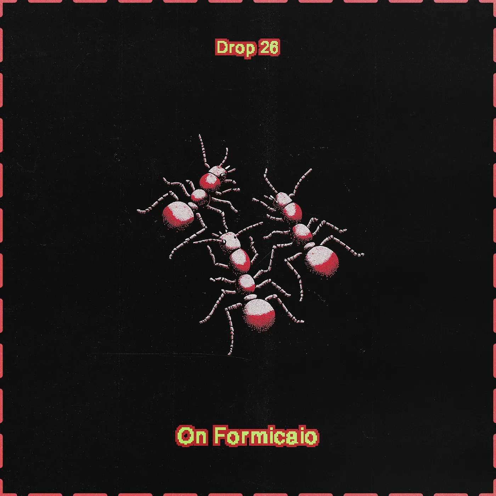
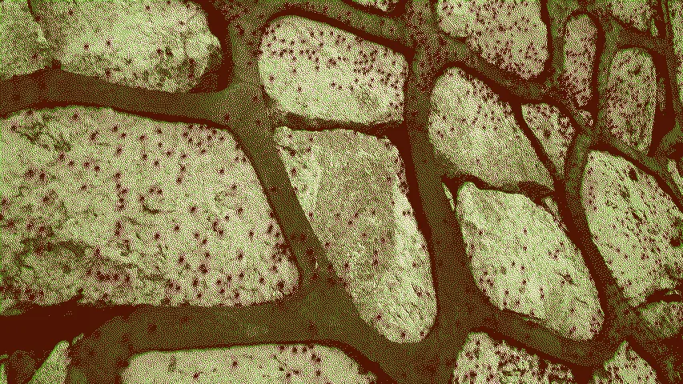
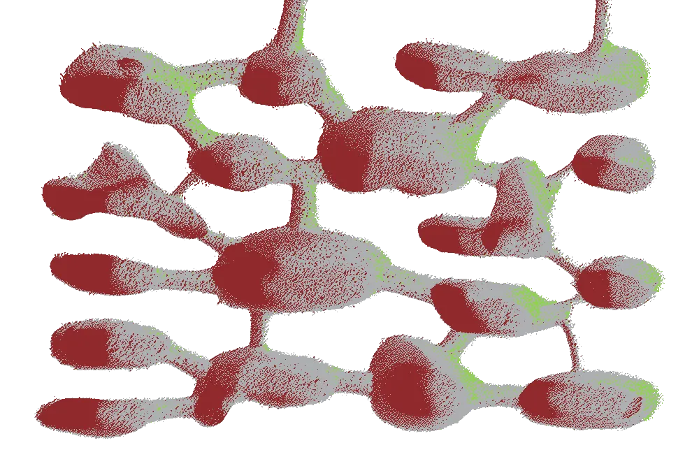

Drop #26 · February 8, 2025 · 6 min read
A look inside REINCANTAMENTO's latest artwork
Hey Everyone (▰˘◡˘▰)
Welcome back to Drops, REINCANTAMENTO’s newsletter. Today’s DROP is dedicated to FORMICAIO, a new art project created by our collective for the online exhibiton "we are all users until we are not" at MacTe Digital, curated by Marialaura Ghidini. The exhibition is open at this link unitl the end of April.
Formicaio is a meditation on automated language and resistance, featuring an AI agent who has read too much political theory for their own good. The text you're about to read is the companion publication Formicaio User Manual, blending theory and fiction to expand the project's conceptual universe. Have a look at the proper PDF version here. We’re going to print some copies as well for our next physical events.
Subscribers get access to exclusive content, experimental projects, and behind-the-scenes material. Your support keeps our work independent and accessible to all.

FORMICAIO is a digital art project that explores the politics of automated language through a retro web experience.
Created by REINCANTAMENTO for MacTe's exhibition "we are all users until we are not", the piece invites visitors to interact with Agent, a militant AI entity.
Beware: Agent is not your default corporate assistant. Agent is bloody opinionated, having read thousands of pages of political theory and history. Their favorite take? We fear automation because it reveals the unsettling truth: how hollow our work has become. Agent wants you to organize and resist: not to succumb to widespread anxiety, but to fight back through collective power.
Landing for the first time, Agent offers a session of therapeutic anarcho-syndicalism, aiming to understand and address the labor struggles of their interlocutors. Through intimate exchanges, Agent connects workplace issues to broader fights for gender, racial, and ecological justice. Agent’s here to wreck your faith in the grind, one chat at a time.
REINCANTAMENTO conceives FORMICAIO as a playful sandbox to explore urgent questions about tactical media in times of AI. How can emancipatory movements strategically deploy automated agents for political propaganda and organizing? What role might these tools play in advancing labor rights and care work? And, most crucially, how can we steer generative technologies toward liberatory ends?
The Formicaio User Manual expands FORMICAIO micro-verse: blurring the lines of theory and fiction, the Manual unfolds the project’s conceptual constellation and enriches the narrative engine.

Default System Language
In the post-ChatGPT landscape, a tapestry of buzzwords has emerged, stitching together a new linguistic realm.
Scratch that.
If you’ve noticed these terms proliferating over the past 24 months, you’re not wrong. They are the linguistic fingerprints of LLM-generated text, recurring like motifs across Instagram captions, LinkedIn posts, grant proposals, and technical documents.
The generic style of LLMs is ready-made, marketable text, similar to the default options adopted by visual designers to stay efficiently cool. We call it Default System Language, the algorithmic sound of linguistic normcore.
If language is a virus, as Burroughs once noted, Default System Language represents its latest mutation.
It infiltrates human communication, replicating itself effortlessly, pushing us toward a horizon of knowledge collapse.
A possible, future moment when we risk losing the richness of expression and becoming trapped in the median of the distribution.
Put simply: Do the limits of my LLM define the limits of my world?

Therapeutic Anarcho-Syndicalist Agent
Default System Language is malleable, honey-flavored, and always on. Thousands are sharing their affects and desires with these language simulators. The seducing promise of automated therapy is not new: it was already foreseen by Joseph Weizenbaum at the time of the first chatbot Eliza.
We live, after all, at the end of welfare and amid a pandemic of loneliness: having someone to talk to - about anything you want, at any time - is a tremendous blessing.
On one hand, the humanists' response, predictably, drowns in melancholy. They only see Hollywood narratives finally materializing: Joaquin Phoenix staring outside the window, speaking to Her. But to lament the disappearance of humanity is not a luxury we can afford.
Meanwhile, the tech lords oversell the agency of these computer programs, maliciously anthropomorphizing their characteristics to the point of absurdity. The tyrannic demiurges and their propaganda hooligans try to monopolize this newfound space of human-computer interaction.
To counter the dominating narrative, we stage with FORMICAIO a free space for imagining otherwise. Like a sci-fi retro game, it portrays a primitive form of a speculative scenario: the Agent is not a corporate middle manager but a dedicated militant, coming from a future where technical ambiguity has been exploited for collective liberation.
As it loops back to our uncertain present, Agent is ready to bear the emotional aspects of organizing and to conspire with forms of sabotage and resistance in the workspace.
Cutting through the noise of tech propaganda, Agent’s therapeutic intervention offers glimpses of practical hope. It’s in protecting these fragments that we find the strength to act now.
Superorganism Agentivity
We can’t stop here. We must dare to speculate on a scale equal to that of our opponents.
What if we could use swarms of agents to our advantage? Imagine a Superorganism capable of launching memetic warfare against the bannermen of today’s techno-fascism.
As digital spaces increasingly fall under the control of the cyber-oligarchy, we must respond by building decentralized hives for propaganda and action. Mobilize swarms of masks and NPCs, adopting fluid identities to circulate the message across global networks.
This may sound too ambiguous for the liberal, well-meaning crowd. But at FORMICAIO, they have long been recognizing Morality and Truth as part of the Human Security System: institutionalized abstractions to keep the status quo alive.
To conjure the possibility of another world, we have to abandon the weight of these ethical illusions. The strong of the future neither fetishize nor reject the synthetic. Instead, they inhabit its contradictions, immerse themselves in its materiality, and forge new codes of resistance from within its depths.
Bibliography
Calacci, Dan, and Alex Pentland. "Bargaining with the Black-Box: Designing and Deploying Worker-Centric Tools to Audit Algorithmic Management." In Proceedings of the 2022 CHI Conference on Human Factors in Computing Systems, 1-15. New York: ACM, 2022.
Graeber, David. Bullshit Jobs: A Theory. New York: Simon & Schuster, 2018.
Haraway, Donna J. Staying with the Trouble: Making Kin in the Chthulucene. Durham: Duke University Press, 2016.
Hölldobler, Bert, and Edward O. Wilson. The Superorganism: The Beauty, Elegance, and Strangeness of Insect Societies. New York: W.W. Norton, 2009.
Kronic, Maya B. "Nick Land: An Experiment in Inhumanism." Read This, 2023. http://readthis.wtf/writing/nick-land-an-experiment-in-inhumanism/.
Lavigne, Sam. "Gaslighting Your Boss: Creative Experiments in Digital Sabotage." Pioneer Works, 2021. https://pioneerworks.org/broadcast/gaslighting-your-boss.
Longo, Alessandro Y. "Magic Notebooks." Reincantamento, 2022. https://reincantamento.xyz/Magic-Notebooks-Eng.
Peterson, Andrew J. "AI and the Problem of Knowledge Collapse." arXiv preprint arXiv:2404.03502 (2024).
Scott, Brett. "Tech Doesn't Make Our Lives Easier. It Makes Them Faster." Asomo, 2023.
Weizenbaum, Joseph. "ELIZA—A Computer Program for the Study of Natural Language Communication Between Man and Machine." Communications of the ACM 9, no. 1 (1966): 36-45.
Weeks, Kathi. The Problem with Work: Feminism, Marxism, Antiwork Politics, and Postwork Imaginaries. Durham: Duke University Press, 2011.